programmierung
und datenbanken
Wissenspyramide
Joern Ploennigs
Ablauf
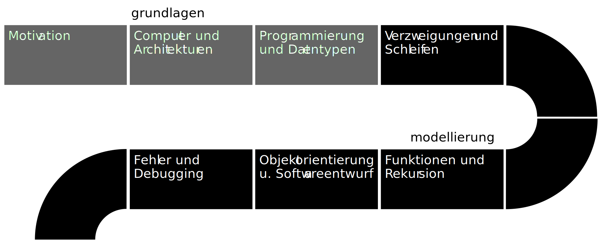Wissenspyramide
Die Wissenspyradmide ist ein Modell zur Darstellung der Entstehung von Wissen.
Die vier Elementtypen: Zeichen, Daten, Informationen und Wissen werden pyramidenförmig als 4 Ebenen dargestellt.
Zeichen formen die Basis und das Wissen die Spitze der Pyramide.
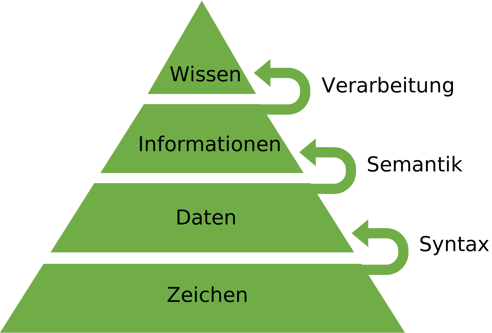
Zeichen
Definition: Zeichen
Ein Zeichen codiert einen einzelnen Buchstaben, eine Ziffer, ein Sonderzeichen oder ein Steuerzeichen.
- Bsp. 1: Deutsches Alphabet mit Umlauten und Zahlen, Satztrennungs und -endzeichen Zeichensatz:
abcdefgijklmnopqrstuvwxyz ABCDEFGHIJKLMNOPQRSTUVWXYZ äöüßÄÖÜ0123456789,:;-.!? - Bsp. 2: ASCII-Text (ISO 8859-1) ist eine Codierung von 256 darstellbare Zeichen in 8 Bits. (Ursprünglich waren es nur 128 Zeichen in 7 Bits.)
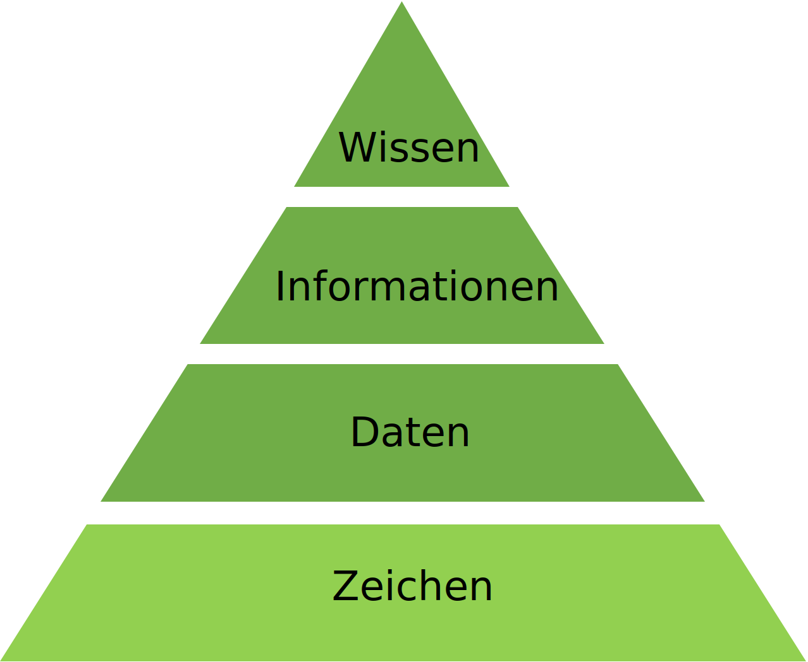
Syntax
Definition: Syntax
Formale Regeln, die definieren, wie wohlgeformte Ausdrücke auf Basis eines Zeichensatzes gebildet werden.
- Bsp. 1: Dt. Grammatik - Satz Regeln:
- 1+ Wort mit je 2+ alpha-num. Zeichen
- Leerzeichen trennt 2 Worte
,:;-trennen Satzteile.!?beendet einen Satz
- Bsp. 2: HTML (Internetseite):
- Jede Zeile enthält ASCII Zeichen
- Zeilenvorschub trennt Zeilen
- Zeile enthalten Text oder HTML-Tag, der mit
<beginnt und mit>endet
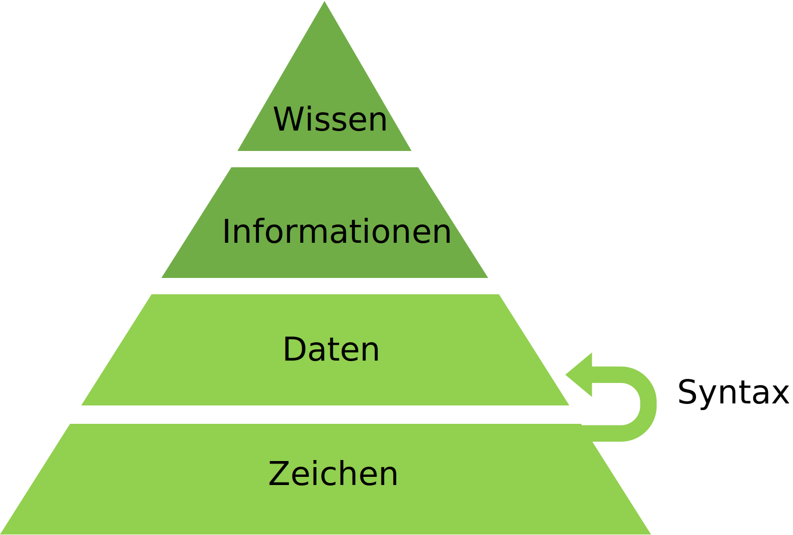
Daten
Definition: Daten
Eine wiederholt interpretierbare Darstellung von Information in formalisierter Art, geeignet zur Kommunikation, Interpretation oder Verarbeitung.
Bsp. 1: Formal korrekter Satz. z.B. „ Ich Bahnhof nur verstehe.“
Bsp. 2: HTML Textdatei (*.html).
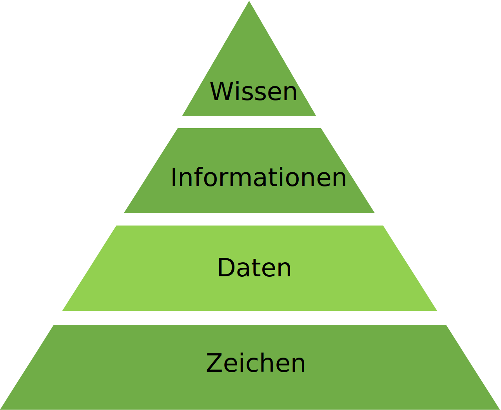
Semantik
Definition: Semantik
Vorgaben für die Interpretation von Daten.
- Bsp. 1: Deutsches Wörterbuch. Z.B. Definition von “Bahnhof” im Duden:
- Gesamtkomplex einer Bahnstation mit Gleisanlagen und zugehörigen Gebäuden
- zum Bahnhof gehörendes Gebäude mit [großer] Halle
- Bsp. 2: HTML Elemente
<p>definiert einen Absatz<img>definiert ein Bild<table>definiert eine Tabelle- …
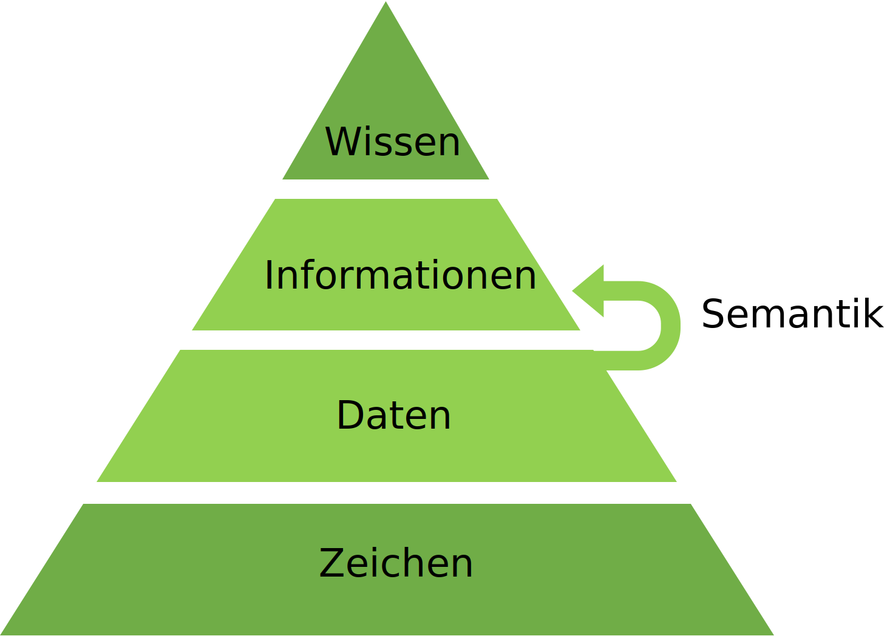
Informationen
Definition: Informationen
Daten, die mit Sinn und Zweck versehen sind. Sie haben Bedeutung und sind für einen bestimmten Zweck organisiert. Informationen zum Bsp. sind eine Sammlung von Daten mit zugehörigen Erklärungen, Interpretationen und anderes Textmaterial, die ein bestimmtes Objekt, Ereignis oder einen bestimmten Prozess betreffen.
- Bsp. 1: Korrekter deutscher Satz z.B. „Ich verstehe nur Bahnhof.“
- Bsp. 2: HTML Textdatei (*.html).
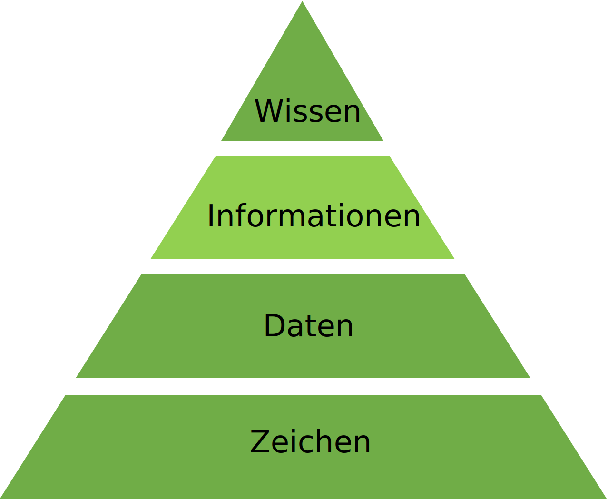
Verarbeitung
Definition: Verarbeitung
Verknüpfung von Informationen durch Algorithmen, Erfahrungen, Werte und Fachkentnissen.
- Bsp. 1: Deutsche haben die Erfahrung, dass „Ich verstehen nur Bahnhof.“ eine Redewendung ist.
- Bsp. 2: Webbrowser: Ein Webbrower interpretiert die HTML-Tags und render daraus eine Webseite
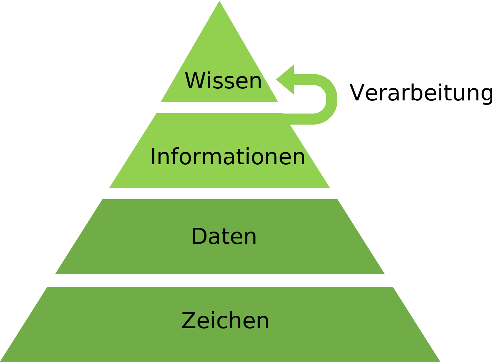
Wissen
Definition: Wissen
Die gesammelten, verknüpften Informationen über einen bestimmten Sachverhalt, integriert mit persönlichen Erfahrungen. Das Wissen weißt eine wesentlich höhere Komplexität als die Information auf und ist eines der höchsten Güter einer Unternehmung. Mittels Wissen lassen sich Entscheidungen treffen und Aktionen einleiten.
- Bsp. 1: „Ich verstehen nur Bahnhof.“ bedeutet nichts verstehen oder verstehen wollen.
- Bsp. 2: Fertig gerenderte Webseite
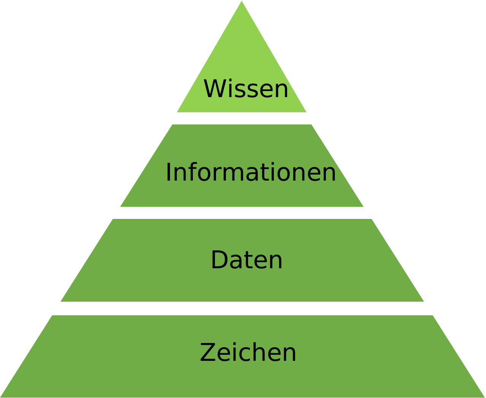
Hörsaalfrage
Was sind in dem Bild die Zeichen?
Hörsaalfrage
Was ist in dem Bild der Syntax?
Hörsaalfrage
Was ist in dem Bild die Semantik?
Hörsaalfrage
Was ist in dem Bild die Verarbeitung?
Antworten: Hieroglyphen
- Zeichen: Jede Hieroglyphe stellt ein Zeichen dar
- Syntax: Die Hieroglyphen sind in Spalten angeordnet. Wir lesen sie von oben nach unten und von rechts nach links.
- Semantik: Jede Hieroglyphe hat eine kontextspezifische Bedeutung welche Bildzeichen, Lautzeichen oder Deutzeichen darstellen können.
- Verarbeitung: Die Hieroglyphen können nur in Ihrem Kontext korrekt Interpretiert werden.
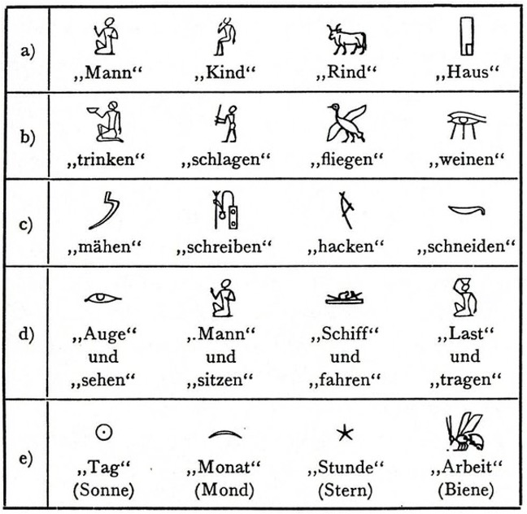
Syntax einer Programmiersprache
Definition: Syntax
Formaler Regelsatz, der definiert, wie der Computer die Programmiersprache interpretieren soll. Der Syntax umfasst meist Regeln zur Definition von Befehlen (Wörter), Variablen (Werte), Code-Blöcken (Sätze).
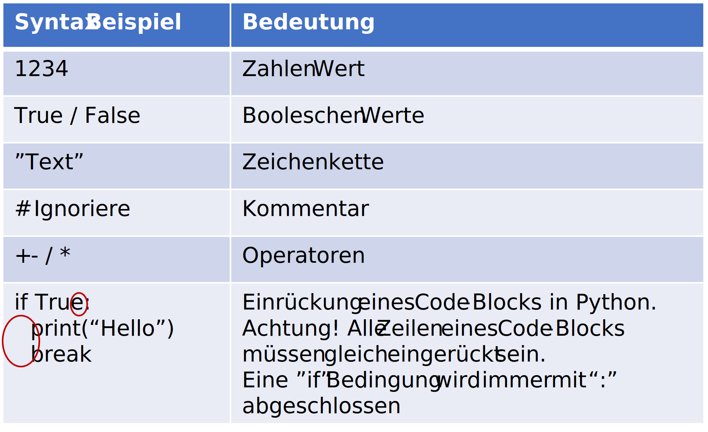
Semantik einer Programmiersprache
Definition: Semantik
Definition der Bedeutung der Sprachelemente und der zulässigen Kombinationen von Elementen.
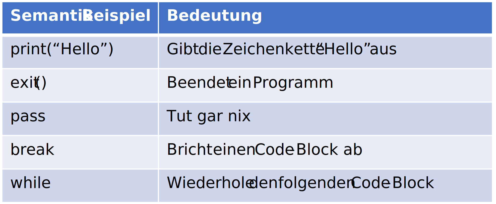
Fragen

programmierung
und datenbanken